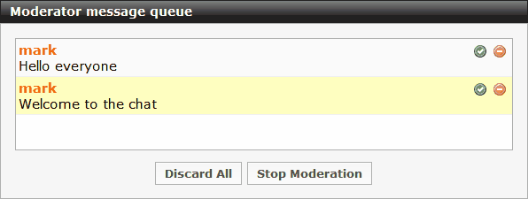

Chat room moderators have complete control over an ongoing chat session; they can approve or discard messages before
they reach the audience, highlight a guest star user and more.
To become a moderator, once you are logged in as an administrator, use the /moderate command. The
moderator window will appear, and all users in the room will see a message informing them that their messages
are being forwarded to the moderator for approval.

When you moderate a room, all user messages are sent to the moderator window message queue. Highlight a message and
click the Approve button (green) to have this message posted to the audience. Click the Discard button
(red) to remove the message from the queue, without posting it. The Discard All button will empty the message
list.
If you invited guest-stars or speakers, you can enable all their messages by using the /highlight
{nickname} command. The celebrity's nickname is then highlighted (just like as if they were an operator).
During a moderated chat, if you ignore someone (by clicking their name and selecting Block), no messages from
that user will reach the moderator queue, effectively turning the blocked user into a spectator.
Use the Stop Moderation button to return the room back to normal chat mode.